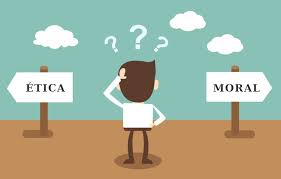
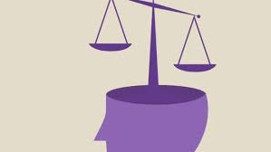

Curso de Ética y Moral

Descripción del Curso
Este curso está diseñado para explorar los conceptos fundamentales de la ética y la moral, sus diferencias y cómo influyen en nuestras decisiones y sociedades. Perfecto para quienes desean profundizar en la reflexión filosófica.
Duración del Curso
Duración total: 120 minutos
Objetivos del Curso
- Distinguir entre ética y moral.
- Comprender las principales teorías éticas a lo largo de la historia.
- Aplicar conceptos éticos a situaciones contemporáneas.
- Desarrollar un pensamiento crítico respecto a dilemas morales.
Contenido del Curso
- Módulo 1: Introducción a la Ética y la Moral (15 minutos)
- Módulo 2: Teorías Éticas Clásicas (30 minutos)
- Módulo 3: Ética Aplicada (30 minutos)
- Módulo 4: Dilemas Morales Modernos (25 minutos)
- Módulo 5: Conclusiones y Reflexiones (20 minutos)
Módulo 1: Introducción a la Ética y la Moral
En este módulo, aprenderás las diferencias entre ética y moral, su origen histórico y por qué son esenciales para entender el comportamiento humano.

Definiciones Clave
- Ética: Disciplina filosófica que reflexiona sobre lo correcto y lo incorrecto.
- Moral: Conjunto de normas y valores compartidos por una sociedad.
Módulo 2: Teorías Éticas Clásicas
Exploraremos las principales corrientes de pensamiento ético desarrolladas por filósofos como Aristóteles, Kant y Mill.
Corrientes Principales
- Ética Virtuosa: Basada en el desarrollo de virtudes personales (Aristóteles).
- Deontología: Enfoque en el deber y las reglas universales (Kant).
- Utilitarismo: Prioriza el mayor bienestar para el mayor número (Mill).
Módulo 3: Ética Aplicada
Este módulo analiza cómo aplicar principios éticos a cuestiones como el medio ambiente, la tecnología y los derechos humanos.
Ejemplos de Ética Aplicada
- Ética ambiental: Reflexiones sobre la sostenibilidad.
- Bioética: Dilemas en la medicina y la genética.
- Ética digital: Privacidad y uso ético de la tecnología.
Módulo 4: Dilemas Morales Modernos
Analizaremos casos actuales para practicar la toma de decisiones éticas.
Ejemplos
- Uso de inteligencia artificial en decisiones críticas.
- Impacto ético del consumo masivo.
- Dilemas laborales y equidad de género.
Módulo 5: Conclusiones y Reflexiones
Recapitularemos los conceptos clave y discutiremos cómo continuar desarrollando una perspectiva ética.
Próximos Pasos
- Lectura de autores contemporáneos sobre ética.
- Participación en debates filosóficos.
- Aplicación de conceptos a tu vida diaria.
Conclusión
¡Enhorabuena por completar el curso de Ética y Moral! Continúa cuestionando y reflexionando sobre las decisiones que nos afectan a todos.